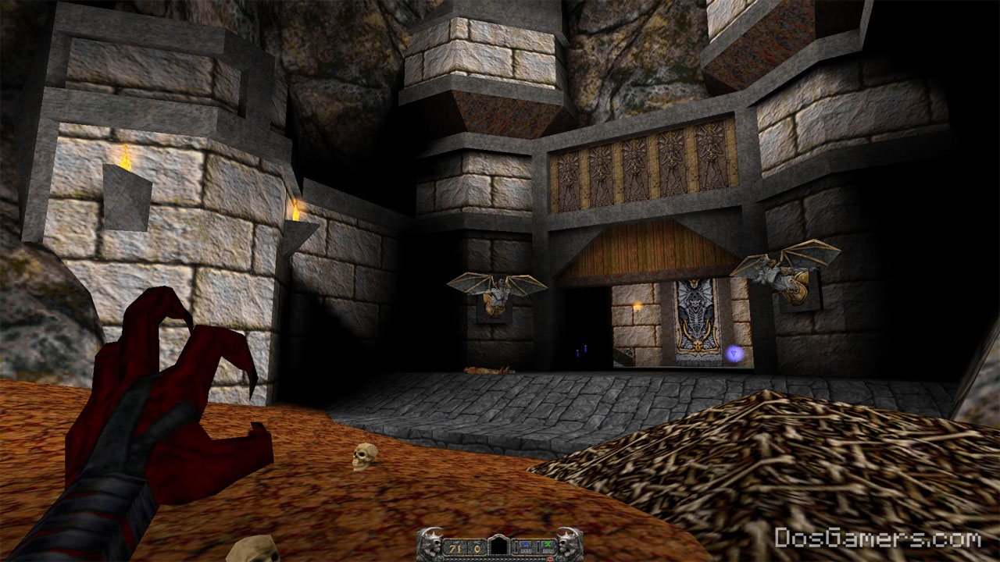
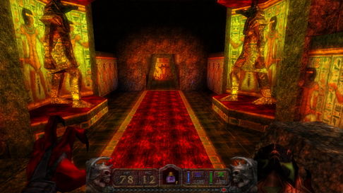

El modding es una práctica software, ampliamente presente en el mundo de los
videojuegos, que busca realizar modificaciones a un software que ha sido liberado previamente
con el fin de añadir o mejorar características del producto. Estas modificaciones van guiadas por la
creatividad y la innovación en los equipos de desarrollo. Obteniendo así productos abiertos a nuevos dominios, con
mejor jugabilidad, historias nuevas y mejoras en la compatibilidad.
 
Ejemplo: Mejora en texturas e iluminación
Aunque en la web se encuentren muchos casos de éxito de Mods, es una realidad que muchos proyectos de modding fracasan en su desarrollo.
Algunas causas de fracaso en un proyecto de modding vienen dados por problemáticas presentes en comunidades abiertas de
trabajo, por ejemplo: inconvenientes en la comunicación, ausencia de información útil para el manejo del
proyecto o de definición de tareas y roles necesarios para el desarrollo. Se busca guiar a los
desarrolladores de esta práctica en la obtención de mejores resultados en sus proyectos.
|